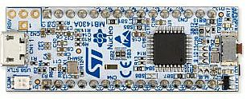

E04 — Microcontroladores II
"Hacer parpadear un LED es fácil. Hacer parpadear un LED MIENTRAS leés un sensor, mandás WiFi y respondés a un botón — eso es ingeniería embebida." — el salto de E03 a E04
En E03 controlaste pines de a uno. Acá aprendés a hacer que el MCU haga muchas cosas a la vez de forma eficiente: timers por hardware, DMA, un mini sistema operativo (RTOS), y cómo durar meses con una batería.

1. El problema: delay() bloquea todo
delay(1000). Pero delay CONGELA el chip — durante ese segundo no puede leer un botón, ni atender WiFi, ni nada. Para hacer varias cosas "a la vez" hay que abandonar delay.Solución 1: millis() (cooperativo manual)
unsigned long t1 = 0, t2 = 0;
void loop() {
if (millis() - t1 >= 1000) { t1 = millis(); parpadearLED(); }
if (millis() - t2 >= 200) { t2 = millis(); leerSensor(); }
// ambas "corren" sin bloquearse — multitarea cooperativa manual
}2. Timers por hardware
- Interrupción periódica: "ejecutá esta función cada 10ms exactos" — sin drift.
- PWM por hardware: la señal se genera sola, el CPU queda libre.
- Input capture: medir el ancho de un pulso (ej, el eco del sensor ultrasónico).
🚦 delay() vs millis() — por qué delay() bloquea todo
delay() la CPU queda atascada y el segundo LED no puede parpadear. Con millis() (no bloqueante) los dos corren libres.3. DMA — mover datos sin el CPU
4. RTOS — el sistema operativo de tiempo real
// FreeRTOS en ESP32 — dos tareas verdaderamente concurrentes
void tareaLED(void *p) {
for (;;) {
digitalWrite(2, !digitalRead(2));
vTaskDelay(500 / portTICK_PERIOD_MS); // cede el CPU (no bloquea)
}
}
void tareaSensor(void *p) {
for (;;) {
Serial.println(analogRead(34));
vTaskDelay(200 / portTICK_PERIOD_MS);
}
}
void setup() {
xTaskCreate(tareaLED, "LED", 2048, NULL, 1, NULL);
xTaskCreate(tareaSensor, "Sensor", 2048, NULL, 1, NULL);
// el scheduler de FreeRTOS las corre "a la vez"
}xTaskCreate = crear un thread. vTaskDelay = ceder el CPU (yield). Las prioridades, los mutex para proteger recursos compartidos, las race conditions — TODO lo de M18 aplica idéntico. Si dos tareas tocan la misma variable sin mutex, tenés el mismo bug de race condition que en un servidor.
5. Mutex y colas en RTOS
SemaphoreHandle_t mutex = xSemaphoreCreateMutex();
void tareaA(void *p) {
for (;;) {
xSemaphoreTake(mutex, portMAX_DELAY); // lock
// ... acceso seguro al recurso compartido ...
xSemaphoreGive(mutex); // unlock
vTaskDelay(100 / portTICK_PERIOD_MS);
}
}mutex de FreeRTOS es el MISMO concepto que el lock de M18: solo una tarea entra a la región crítica a la vez. Las colas de FreeRTOS (queues) son el patrón producer-consumer que conecta con sistemas distribuidos (M17). Mismo problema de concurrencia, escala microscópica.
6. Power management — durar con batería
| Modo | Consumo (ESP32 aprox) | Cuándo |
|---|---|---|
| Activo (WiFi) | ~160-260 mA | Transmitiendo |
| Activo (sin radio) | ~20-40 mA | Procesando |
| Light sleep | ~0.8 mA | Pausas cortas |
| Deep sleep | ~10 µA | Esperar mucho entre lecturas |
// Deep sleep: dormir 60 segundos y despertar
esp_sleep_enable_timer_wakeup(60 * 1000000); // microsegundos
esp_deep_sleep_start(); // el chip casi se apaga; al despertar reinicia desde setup()7. Bootloader, flash y OTA
- Bootloader: el primer código que corre al encender; decide qué programa cargar.
- Particiones de flash: el programa, los datos, el sistema de archivos conviven en la flash.
- OTA (Over The Air): actualizar el firmware por WiFi sin cable — esencial en IoT desplegado.
8. Práctica
- Wokwi — soporta FreeRTOS en ESP32 simulado.
- Tutorial oficial de FreeRTOS.
- Reto: corré 3 tareas (LED, sensor, log) concurrentes con FreeRTOS y medí si se interfieren.
9. Errores típicos
vTaskDelay que cede el CPU. delay() bloquea el core.xTaskCreate reserva un stack; si es insuficiente, stack overflow → crash. Dimensionalo.✅ Checkpoint
1. ¿Por qué hay que abandonar delay() para multitarea?
Porque delay() congela el CPU durante toda su duración — no puede atender otras tareas, botones ni comunicación. Se reemplaza por millis() (cooperativo) o vTaskDelay() (RTOS), que ceden el procesador.
2. ¿Qué es un RTOS y cómo se relaciona con M14?
Un sistema operativo de tiempo real (ej FreeRTOS) que reparte el CPU entre tareas, igual que el scheduler de M14, pero determinista y en KB de RAM. Tiene tareas (threads), prioridades, mutex y colas — los mismos conceptos de M14/M18.
3. ¿Para qué sirve un timer por hardware?
Es un contador independiente del CPU que dispara interrupciones a intervalos exactos, genera PWM o mide pulsos — sin que el código tenga que "contar". Libera al CPU y da precisión de microsegundos.
4. ¿Qué hace el DMA?
Copia datos entre memoria y periféricos sin involucrar al CPU. El CPU delega el trabajo mecánico de mover bytes y queda libre para procesar. Clave para audio, cámara y comunicación de alto volumen.
5. ¿Cómo el código define la vida útil física del dispositivo?
Vía power management: un MCU siempre activo (~100mA) agota una batería en horas; usando deep sleep (~10µA) entre lecturas, la misma batería dura meses o años. El software decide el consumo, y el consumo decide la autonomía (cálculo de E00).
6. ¿Por qué un mutex en RTOS es lo mismo que en M18?
Porque resuelve el mismo problema: proteger un recurso compartido para que solo una tarea lo toque a la vez, evitando race conditions. Si dos tareas FreeRTOS modifican una variable sin mutex, tenés exactamente el bug de concurrencia de M18, en escala microscópica.
🧠 Autoevaluación rápida
Respondé sin mirar arriba. Cada pregunta te explica el porqué.
1. Dentro de una tarea de FreeRTOS, ¿por qué se usa vTaskDelay() y no delay()?
vTaskDelay() duerme la tarea y el scheduler aprovecha ese tiempo para correr las otras. delay() se queda ocupando el core: mata la concurrencia igual que bloquear el event loop de JavaScript.2. ¿Qué hace el DMA (Direct Memory Access)?
3. En un dispositivo a batería, ¿por qué el deep sleep cambia todo?
setup(). El código decide cuánto duerme el chip: el software define la vida útil física del producto.